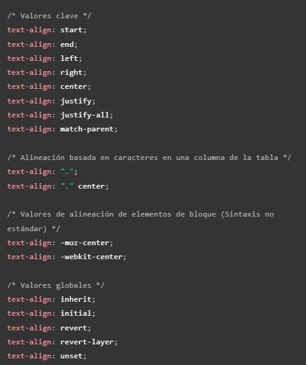
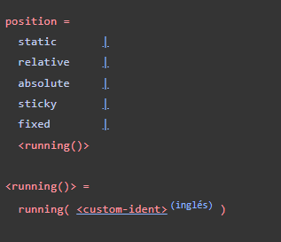

| Nombre del atributo |
Descripción |
Valores posibles |
Ejemplo de uso |
Imagen representativa |
Fuente de información |
| color |
Define el color del texto |
Nombre de color, código HEX, RGB |
color: red; |
|
MDN |
| background-color |
Establece el color de fondo |
Nombre de color, código HEX, RGB |
background-color: blue; |
|
MDN |
| font-size |
Controla el tamaño del texto |
px, em, rem, %, valores absolutos |
font-size: 16px; |
|
MDN |
| font-family |
Define la familia tipográfica del texto |
Arial, Verdana, sans-serif, serif, cursive |
font-family: Arial, sans-serif; |
 |
MDN |
| text-align |
Alinea el texto |
left, center, right, justify |
text-align: center; |
 |
MDN |
| border |
Define los bordes de un elemento |
Ancho, estilo y color (ej. 2px solid red) |
border: 2px solid red; |
|
MDN |
| margin |
Establece el margen exterior del elemento |
px, em, %, auto |
margin: 10px; |
|
MDN |
| padding |
Establece el relleno interior del elemento |
px, em, % |
padding: 15px; |
|
MDN |
| display |
Define cómo se muestra un elemento |
block, inline, flex, grid, none |
display: flex; |
 |
MDN |
| position |
Define el tipo de posicionamiento |
static, relative, absolute, fixed |
position: absolute; |
 |
MDN |
| overflow |
Controla el comportamiento del contenido desbordado |
visible, hidden, scroll, auto |
overflow: hidden; |
|
MDN |
| z-index |
Controla la superposición de elementos |
Número entero positivo o negativo |
z-index: 10; |
|
MDN |
| box-shadow |
Aplica sombras a un elemento |
OffsetX, OffsetY, Blur, Color |
box-shadow: 5px 5px 10px gray; |
|
MDN |